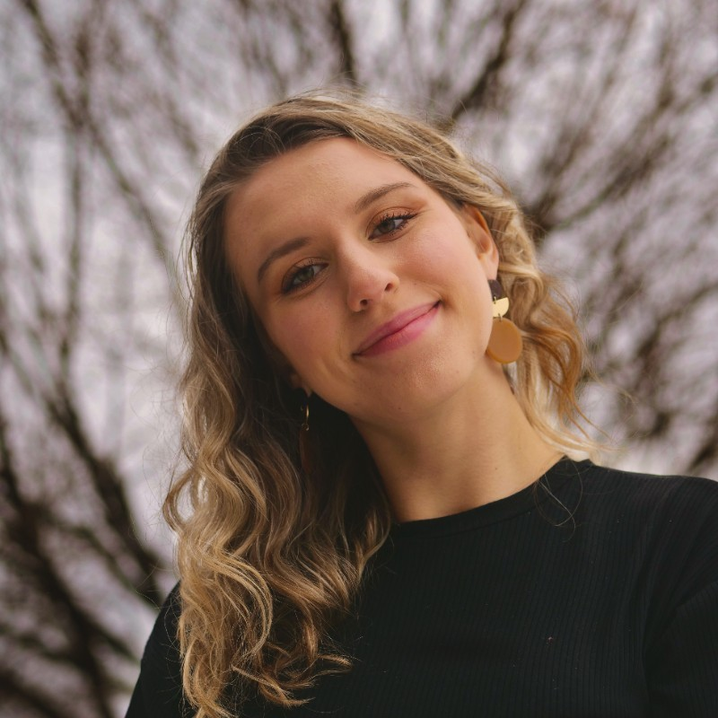

ABOUT.

I'm Lauren Guido, a film and media producer working at the intersection of documentary, narrative, and emerging technology.
I'm currently producing my first feature film, NEW HERE, a hybrid documentary that follows a pizza delivery driver as she falls down a virtual rabbit hole into a world of artists and cypherpunks working to build a more equitable internet. What began as a Production Coordinator role has evolved into a producing position, where I now lead across archival, story, and post-production.
My work often sits at an in-between space. I'm drawn to projects that challenge traditional forms and require new structures, new tools, or new ways of seeing in order to be told honestly. Whether building out a 5,000+ piece archival system, developing workflows for hybrid storytelling, or collaborating across editorial, technology, and research teams, I'm interested in the mechanics behind how a story comes together just as much as the story itself.
I started in public media, producing educational television at PBS Detroit, where I saw firsthand how grassroots storytelling can function as a form of access. That idea continues to ground my work, even as the mediums shift.
At its core, I'm interested in stories rooted in reality — and the systems, people, and histories that shape them.
Awards & Recognition
Lumen Prize Finalist — Co-Producer, Man With AI Movie Camera
Michigan Association of Broadcasters Scholarship Award
Credits
Producer — NEW HERE (upcoming)
Studio Manager — dpop Studios (2024)
Showrunner's Assistant — The Changeling, Apple TV+ (2023)
Producer's Assistant — The Gilded Age Season 2, HBO (2023)
Set Production Assistant — Kaleidoscope, Netflix (2022)
Set Production Assistant — The Marvelous Mrs. Maisel Season 5, Amazon (2022)
Producer — The Stream (2022)
Producer — Charlie Blood: Proof of Concept (2022)
Producer — Michigan Learning Channel (2021–2022)
Line Producer — PBS Books (2021)
Producer — Library of Congress: National Book Festival, PBS Books (2021)
Producer — Read, Write, Roar!, Michigan Learning Channel (2021)
Set Production Assistant — Love Live Season 2, Netflix (2021)
Producer — PBS Detroit, One Detroit & Great Lakes Now (2020–2021)
Production Assistant / COVID Officer — Lenovo New Realities VR Series (2020)
Production Assistant — Price of Freedom (2020)
Producer — Inhuman (2019)
Producer — distracted music video (2019)
2nd AC / Grip — Better To See You With (2019)
Production Assistant — Disfluency (2019)
Key PA / DIT — Solomon (2019)
Producer — 39th Detroit International Jazz Festival Livestream (2018)
Production Assistant — Immigrant Stories (2018)
Transcriber — Maasai Remix (2017–2018)
General Manager & Executive Producer — WOLV-TV (2017–2020)
Tools
Avid · Final Draft · Frame.io · ShotGrid · LucidLink · Hot Budgets · Notion · Otter.ai · Python basics